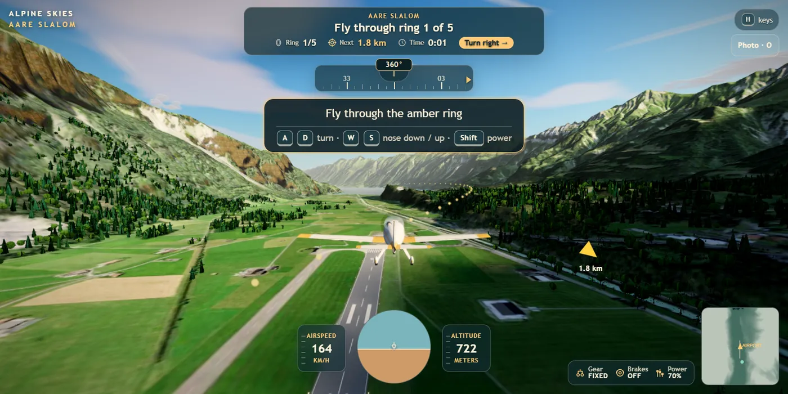
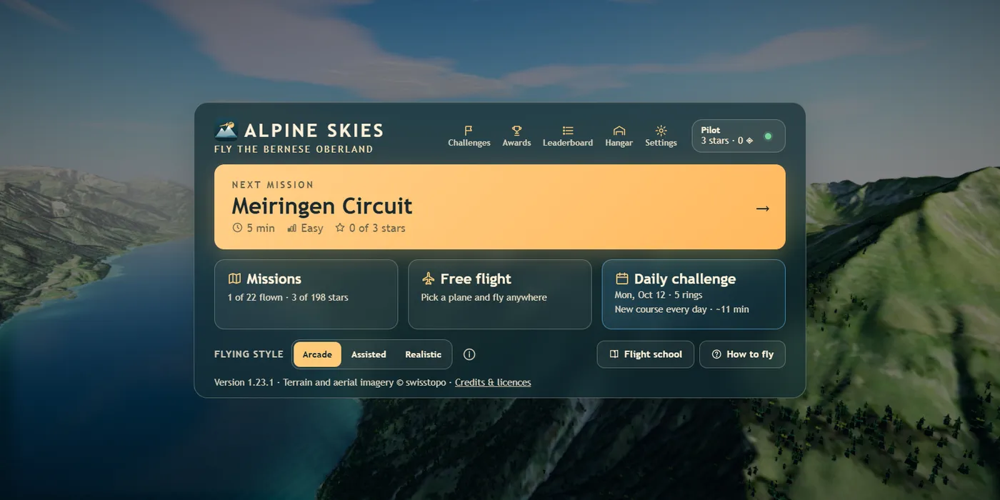
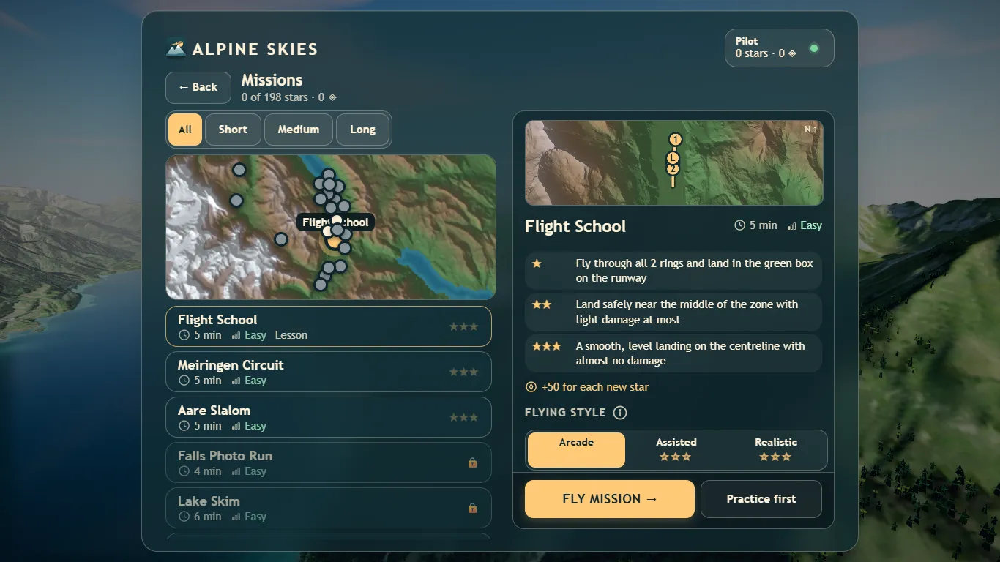

01Guest start
What I chose Chosen
Play instantly as a guest; save codes move progress across devices
What I gave up
Early email capture for growth
Why. Sign-up friction kills first sessions.
Fun project · B2C · Live · 2026 · 6 min read
Problem statement
Casual plane fans choose between heavy simulators that take hours to learn and web games that feel cheap. Nothing good starts in a browser tab in under a minute.
Play it ↗Skip to the decisions

Problem
Serious sims need a strong PC and hours to learn. Quick web games load fast but feel cheap and give no reason to return.
Product
A free flight sim over the Swiss Alps that runs in a browser tab: guest play, missions by length, a difficulty ladder and a daily challenge.
North Star
Missions completed per weekly player: it captures both engagement and progress.
Result
Live. A performance pass cut cold load from 8.4 s to about 4.6 s. Player numbers are not published yet; the first-mission funnel comes next.
Problem
Casual players who like planes have two bad options. Serious sims such as Microsoft Flight Simulator need a strong PC, a big download and hours to learn. Quick web games load fast but feel cheap and give no reason to come back.
There was no middle ground: a good-looking flight you can start in a browser tab in under a minute.
Users
A quick, good-looking flight is the primary need, for casual aviation fans on a laptop with no setup. Learning to fly without feeling lost is the second, for people curious about flying but new to sims.
Returning is a stage, not a third kind of player: a beginner can also be a returning player. So return is measured as a funnel step for both needs, and the Daily Challenge, leaderboard and stars serve both.
Key insight
The first 60 seconds decide everything.
A browser game competes with every other tab. If a player hits a sign-up form or a confusing cockpit, they close the tab. So every early decision optimised for time to first flight. Depth comes later, once the player cares.
Goals and metrics
Health: frame rate on low-end laptops, and load time.
Decisions and trade-offs
What I chose Chosen
Play instantly as a guest; save codes move progress across devices
What I gave up
Early email capture for growth
Why. Sign-up friction kills first sessions.
What I chose Chosen
Balanced visuals against frame rate on average laptops
What I gave up
Peak graphics
Why. A beautiful game that stutters loses players anyway. This is the call behind the 8.4 s to 4.6 s load cut.
What I chose Chosen
Daily Challenge, achievements, leaderboard, stars and coins
What I gave up
Build time on new aircraft and maps
Why. New content is expensive to build; reasons to return are cheap. A bet, not yet measured: the 7-day return rate will test it.
What I chose Chosen
Flight School, Campaign, Free Flight, Quick Challenges, Daily Challenge
What I gave up
A single polished mode
Why. Each mode served a different need. But it broke my own rule about the first 60 seconds: play-testing found the menus confusing. For new players this was a mistake.
Solution

What shipped


Execution
I rebuilt the game on real terrain, the Bernese Oberland from swisstopo open data, tuned to run on laptop graphics. Play-testing then showed the menus and levels were confusing, there was not enough to do, and progress was not saved.
Versions 1.15 to 1.23 answered that with missions sorted by length, Flight School, a daily challenge, guest saves, a leaderboard and clearer in-flight guidance. I then added product analytics on the web build, and accounts, progress saves and the leaderboard in Supabase, so the next round is judged on what players do.
Experiment
Results
| Measure | Result |
|---|---|
| Status | Live with logins, missions, a leaderboard and a cloud backend |
| Cold load, Intel Iris Xe laptop | 8.4 s to about 4.6 s after a performance pass (version 1.15) |
| Feedback that changed the product | "Menus and levels are confusing; not enough to do." Led to missions by length, Flight School and the daily challenge |
| Player funnel | Not published yet: visitors, first flight, first mission, 7-day return |
What I learned
AI coding tools sped up the build. The product decisions, scope and quality bar stayed mine.
My first-60-seconds rule was right, and I broke it with five modes. Writing the rule down is what made the mistake visible. Next: publish the player funnel, run the onboarding test, and try a fake-door test for cosmetic aircraft before building any.